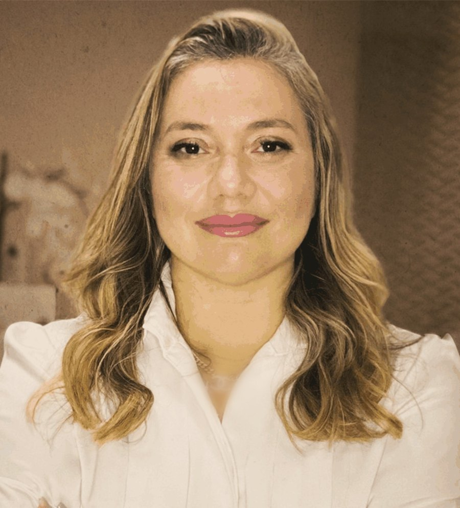
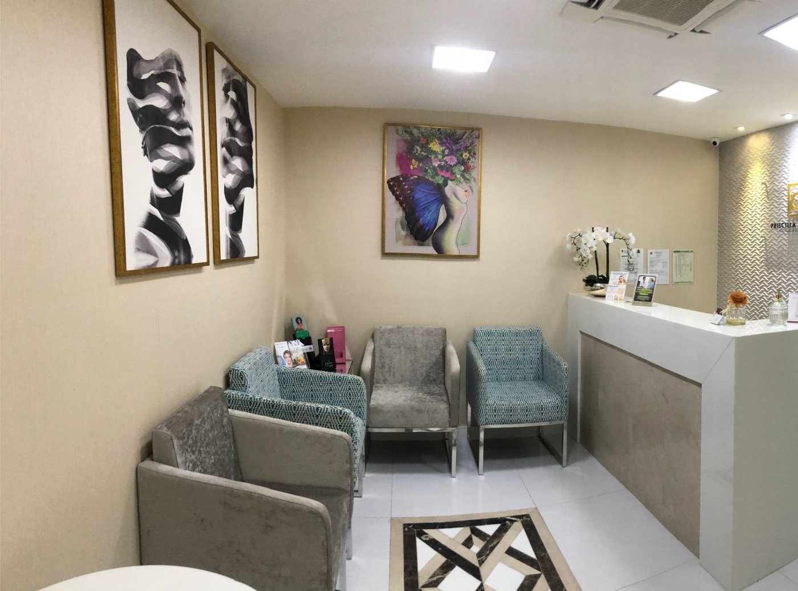
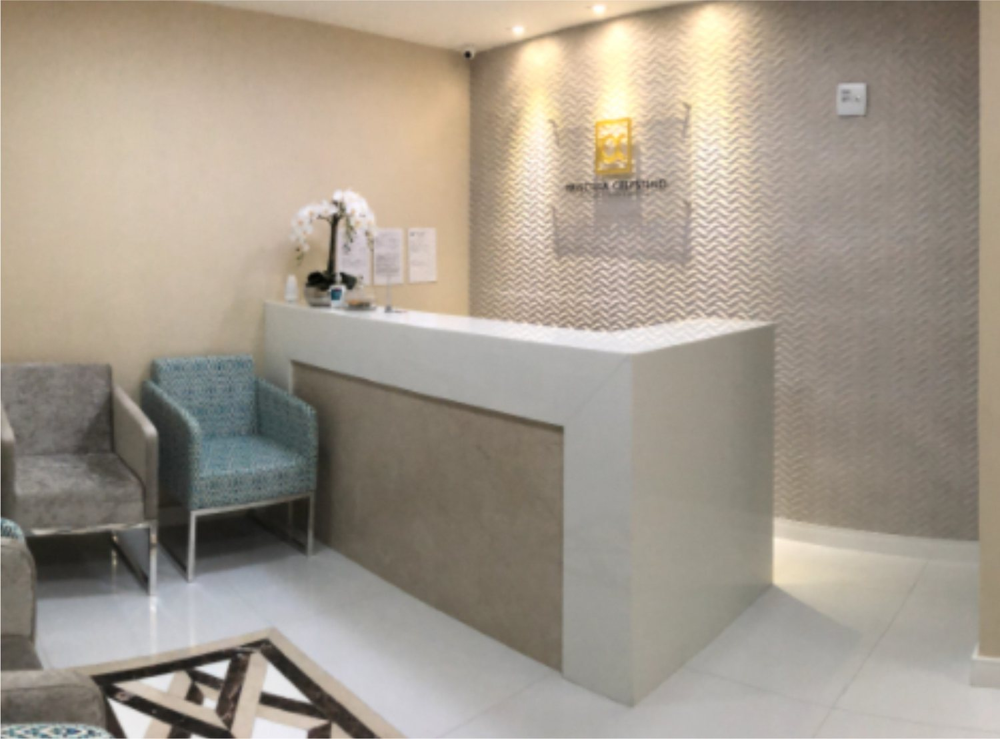
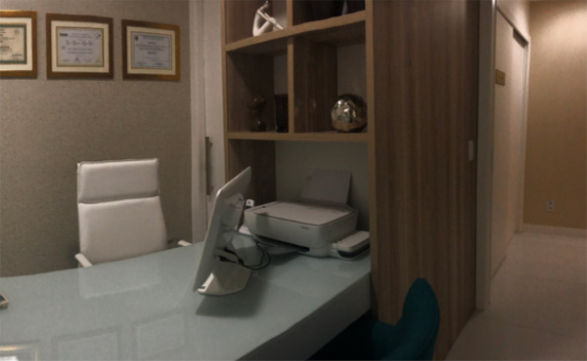
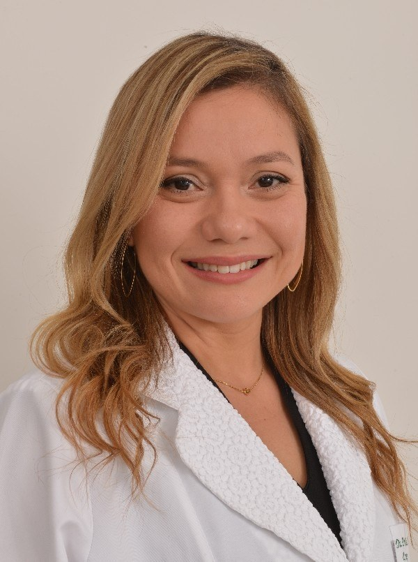

Cirurgiã plástica · Membro Especialista da SBCP
Dra. Priscilla
Celestino
Cirurgia plástica, estética e reparadora, na clínica dela no Hangar, em Salvador.
Mamas, abdome e contorno corporal, cirurgias depois da gestação e do emagrecimento, e face. Cada cirurgia planejada de forma individual, do primeiro atendimento ao pós-operatório.
- CRM-BA
- 14567
- RQE
- 11087
- 5,0 · 162


Salas 414 e 415
Por onde começar
Qual assunto trouxe você até aqui?
As áreas que a Dra. Priscilla divulga, cada uma numa página para ler com calma antes da consulta. A informação é geral; a indicação é individual, definida em consulta.
Volume, queda ou peso
Aumento com prótese de silicone, mastopexia, redução e explante.
Cirurgia das mamasAbdomePele, gordura e músculos
Abdominoplastia, lipoaspiração e diástase dos retos.
Abdome e contornoDepois de grandes mudançasGestação e emagrecimento
Cirurgias combinadas, braços e coxas, no tempo certo.
Pós-gestaçãoFacePálpebras, rosto, nariz e orelhas
Blefaroplastia, lifting facial, rinoplastia e otoplastia.
FaceA clínica é dela
Bege, dourado e verde-água, no Hangar.
“A Clínica é especializada em Cirurgia Plástica em Salvador, localizada no Hangar Business Park, com 3 salas para atendimento ambulatorial completo pré e pós operatórios e tratamento estéticos.” — Site da clínica, página “Quem somos” (2021) · ver o arquivo


Clínica Priscilla Celestino, aberta em abril de 2018. A Dra. Priscilla é a responsável técnica e a diretora clínica.
A clínica e a equipeCritério antes da técnica
Quatro frases da Dra. Priscilla sobre cirurgia.
Estão no texto que ela publicou sobre cirurgia corporal no site da clínica. Dizem como ela pensa uma indicação: individual, com riscos ditos às claras e em ambiente seguro.
Site da clínica, página de cirurgia corporal · ver o arquivo
Consulta e preparo- IPlanejamento individual
“Qualquer procedimento cirúrgico deve ser planejado de forma individual […]”
- IIA decisão é da paciente
“[…] não deve ser feito apenas com o objetivo de satisfazer os desejos de outra pessoa ou para se adaptar a qualquer tipo de imagem ideal.”
- IIIRiscos ditos com clareza
“Todo procedimento cirúrgico está sujeito a possíveis riscos e complicações.”
- IVTécnica e ambiente
“A escolha correta da técnica e a realização da cirurgia em um ambiente seguro e adequado são fundamentais […]”
Trajetória
Da UFBA à clínica própria.
A formação está no perfil da SBCP e no currículo que ela publicou no site da clínica; a clínica, no cadastro da Receita e do CNES. Cada etapa traz a fonte.
- 2000Medicina na UFBA
Graduação na Faculdade de Medicina da Universidade Federal da Bahia.
Fonte: SBCP e site da clínica - 2003Residência em Cirurgia Geral
Hospital Getúlio Vargas, em Recife (PE), a base da formação cirúrgica.
Fonte: SBCP e site da clínica - 2006Trabalho apresentado
“Perfil Epidemiológico de pacientes internados por queimaduras no Hospital São Rafael”, no 2º Encontro dos Serviços Credenciados de Cirurgia Plástica N-NE.
Fonte: currículo do site da clínica - 2008Residência em Cirurgia Plástica
Hospital São Rafael, em Salvador.
Fonte: SBCP e site da clínica - 2018Clínica própria
Abre a Clínica Priscilla Celestino no Hangar Business Park.
Fonte: Receita Federal e CNES - HojeMembro Especialista da SBCP
Categoria “Associado (Membro Especialista)” na Sociedade Brasileira de Cirurgia Plástica.
Fonte: perfil oficial da SBCP

Na voz da Dra. Priscilla
Beleza, saúde e bem-estar, juntos.
“A Clínica Priscilla Celestino foi criada a partir de um ideal de integração entre beleza, saúde e bem-estar. Acreditamos que o autocuidado pode proporcionar uma harmonização do ser humano com sua autoimagem.”
Site da Clínica Priscilla Celestino, página “A Clínica” · ver o arquivo
“[…] através de um relacionamento personalizado e especializado, baseados em nossos valores de honestidade, transparência, cordialidade e humildade.”Site da Clínica Priscilla Celestino, página “A Clínica” · ver o arquivo
Avaliações
5,0 no Google, em 162 avaliações.
Trechos curtos de avaliações públicas da ficha da clínica, sobre o atendimento. Nomes abreviados.
Excelente clínica! A Dra. Priscila Celestino e toda a equipe oferecem um atendimento extremamente humano, atencioso e profissional. […] O ambiente é agradável, bem estruturado e transmite muita confiança.
Fui recebida com muito carinho, atenção e profissionalismo em todos os momentos. Todo o processo foi conduzido com organização, acolhimento e esclarecimento.
A simpatia e profissionalismo da dra. Priscila, me fez sentir tranquila e segura, desde a primeira consulta.
Desde o primeiro atendimento até o pós-operatório, fui tratada com muita atenção, carinho e profissionalismo.
Conteúdos
Para assistir e conferir.
Dois vídeos do canal da clínica, o Instagram da Dra. Priscilla e o perfil dela na SBCP.
Vídeo do canal da clínica sobre uma dúvida comum: operar as mamas antes ou depois de ter filhos.
Assistir no YouTube ↗YouTube · Clínica CelestinoVai fazer abdominoplastia?Vídeo do canal da clínica sobre os pontos do pós-operatório que pedem atenção.
Assistir no YouTube ↗Instagram@dra.priscillacelestinoO perfil da Dra. Priscilla, com mais de 24 mil seguidores.
Abrir o Instagram ↗SBCPPerfil na Sociedade Brasileira de Cirurgia PlásticaCategoria “Associado (Membro Especialista)”, com a formação registrada.
Ver o perfil ↗Consultório
Hangar Business Park, Torre 7.
Salas 414 e 415, na Av. Luís Viana Filho (Paralela), em São Cristóvão. Veja como chegar.
Clínica Priscilla CelestinoHangar Business Park · Torre 7 · Salas 414 e 415
Av. Luís Viana Filho, 13223 · São Cristóvão · Salvador – BA · 41500-300
Atendimento com hora marcada
Horário da ficha da clínica no Google. Atendimento com hora marcada — confirme com a equipe.
Dúvidas frequentes
Perguntas comuns
Onde fica a clínica?
No Hangar Business Park · Torre 7, salas 414 e 415, na Av. Luís Viana Filho, 13223, São Cristóvão, Salvador. Veja endereço e mapa.
Como agendar uma consulta?
Pelo WhatsApp da recepção, (71) 98625-5253. A equipe combina dia e horário na conversa.
Qual é o horário?
A ficha da clínica no Google indica segunda a sexta, das 9h às 17h. O atendimento é com hora marcada — confirme com a equipe.
Qual é a formação da Dra. Priscilla?
Medicina pela UFBA (2000), residência em Cirurgia Geral em Recife e em Cirurgia Plástica no Hospital São Rafael, em Salvador. Registro CRM-BA 14567 · RQE 11087; na SBCP, é Associado (Membro Especialista). Veja a trajetória com as fontes.
A primeira consulta já define a cirurgia?
A consulta serve para ouvir, examinar e explicar o que cada cirurgia pode e não pode fazer, com riscos, cicatrizes e recuperação. A indicação é individual, e a decisão é sua.
Aceita convênio? Quanto custa?
Confirme pelo WhatsApp as condições de atendimento.
Agende
Comece por uma conversa, na clínica.
Atendimento com hora marcada no Hangar Business Park · Torre 7, salas 414 e 415, em Salvador. A recepção combina dia e horário pelo WhatsApp (71) 98625-5253.